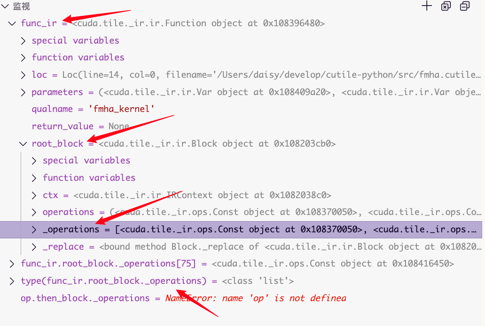

cuTile 历险记，第1集：编译
原本第一集应该是语法和随便找个bmm，flash-attn2的kernel来实现一下并且进行benchmark的，因为所以gpu编程博客都是这样的。
Disclaimer: 我不了解编译器，以下所有内容基于自己的理解，和编译器术语出现偏差乃至出错之处敬请指出
nv官网提示我们，需要cuda driver一个较高的版本，cuda toolkit 13.1（tileiras汇编器），以及blackwell以上的GPU（目前）才能使用cutile。但是我没有b200或者50系（cc12）的游戏卡，我手上能碰到的机器刚好截至hopper，所以我并没有办法编译执行cutile程序，失去了尝鲜的机会。
但是有了cutile-python这个python端，下降到mlir之前的中间代码还是可以了解一下的。
探索过程
屏蔽C库
我们发现报错发生在src/cuda/tile/_cext.pyi，提示驱动版本过低。vibe coding启动，我们让LLM把_cext这个cpp库用一个mock进行替代，骗过编译器；然后包装了一个CutileIrDump类，通过cuda.tile._compile._get_final_ir函数可以获取到cuTile IR （不是TileIR）。有两种格式，人类可读的和binary的。

了解编译流程，我们主要从cuda.tile._compile._get_final_ir入手。
def _get_final_ir(pyfunc, args, tile_context) -> ir.Function:
ir_ctx = ir.IRContext()
func_ir: ir.Function = get_function_ir(pyfunc, ir_ctx, call_site=None)
ir_args = func_ir.bind_arguments(args, get_constant_annotations(pyfunc))
func_ir = infer_types_pass(func_ir, ir_args, pyfunc, tile_context)
# -------- 上方：语法、类型检查 ----------
# -------- 下方：（部分）机器无关优化 ----------
eliminate_assign_ops(func_ir) # <-- breakpoint here
dead_code_elimination_pass(func_ir)
if not CUDA_TILE_TESTING_DISABLE_TOKEN_ORDER:
alias_result = alias_analysis_pass(func_ir)
token_order_pass(func_ir, alias_result)
rewrite_patterns(func_ir)
# Loop invariant code motion needs to run after the token order pass.
# Otherwise, it may incorrectly hoist load operations out of the loop.
hoist_loop_invariants(func_ir)
split_loops(func_ir.root_block)
dead_code_elimination_pass(func_ir)
return func_ir
大概看一下代码：
-
get_function_ir将Python函数转换为第一层中间表示- 创建符号表：收集函数的全局变量、闭包变量等环境信息
- AST到IR转换：通过 _ast2ir 函数将抽象语法树转换为IR表示, 处理变量作用域和版本管理
- 通过 _eliminate_load_store_pass 消除Load/Store操作
-
bind_arguments将实际参数绑定到函数的形式参数，验证参数类型是否支持，并确定参数类型和常量属性 -
infer_types_pass函数的作用- 创建类型映射表和常量映射表
- 将输入参数的类型信息绑定到函数的参数变量
- 处理常量参数，将其替换为常量值
- 操作类型推断：遍历IR中的每个操作，推断其结果类型
- 控制流优化：
- 如果条件表达式是常量，直接展开if-else分支
- 简化没有break/continue的简单循环
- 函数调用内联
- 类型传播：在控制流合并点（如if-else结束）处理类型合并
类型 （tile metadata）
可以从函数名称猜到在分割线之前的部分，都是语法、类型检查，在分割线之后的部分，是机器无关的优化。于是猜测，如果需要获取tile的metadata，最接近源代码的位置可能就是infer_types_pass的返回值了。
在此处打上断点，进行分析： 
可以看到func_ir.root_block._operations 里面就是我们代码经过最基本的翻译，并经过shape检查之后形成的中间表示。这里infer_types_pass这个pass已经执行完了，所以我们应当可以看到所有的tile的shape都是什么。此处（断点处）调用 func_ir.to_string() 即可将中间表示输出为文本形式。
以下列这个kernel为例，
import cuda.tile as ct
ConstInt = ct.Constant[int]
PAD_ZERO = ct.PaddingMode.ZERO
def zfunc(a, b):
sum = a + b
res = ct.cos(sum)
return res
def apply_mod(mod, c_tile, i_m, i_n, tm, tn):
mod_tile = ct.load(mod, index=(i_m, i_n), shape=(tm, tn), padding_mode=PAD_ZERO)
zval = zfunc(mod_tile, c_tile)
return ct.sin(zval)
@ct.kernel
def my_kernel(a, b, c, mod, tm: ConstInt, tn: ConstInt, tk: ConstInt):
i_m = ct.bid(0)
i_n = ct.bid(1)
acc = ct.zeros((tm, tn), dtype=ct.float32)
for i_k in range(tk):
t_a = ct.load(a, index=(i_m, i_k), shape=(tm, tk), padding_mode=PAD_ZERO)
t_b = ct.load(b, index=(i_k, i_n), shape=(tk, tn), padding_mode=PAD_ZERO)
acc = ct.mma(t_a, t_b, acc)
# c_tile = apply_mod(mod, acc, i_m, i_n, tm, tn).astype(ct.float16)
tile1 = ct.full((32, 16), 0.0, ct.float32)
tile2 = ct.full((32, 16), 0.0, ct.float32)
tile3 = zfunc(tile1, tile2)
tile4 = ct.full((16, 64), 2.0, ct.bfloat16)
tile5 = ct.full((16, 64), 2.0, ct.bfloat16)
tile6 = zfunc(tile4, tile5)
c_tile = apply_mod(mod, acc, i_m, i_n, tm, tn).astype(ct.float16)
ct.store(c, index=(i_m, i_n), tile=c_tile)
截取一小段中间表示的文本形式，可以看到比如tile4和tile5的dtype和shape都已经确定了。
torch.Tensor的metadata是dtype, shape, strides.
在cuTile的tile里面，为了硬件效率最大化，tile的存储不一定是某（行or列）主序，甚至可能任何一个维度的相邻两个元素在内存中都不连续，因此stride（其实是layout）是
tileiras需要去figure out的东西，cuTile程序员无法操作。

cuTile Python Bytecode 和后续
如果直接获取_get_final_ir函数的输出并且调用to_string()，就会得到cuTile Python IR （不是TileIR）。因为已经执行过了一些简单的优化，所以原始代码中的变量名信息已经丢失掉了(这也是我们之前要在优化之前就获取中间产物的原因)。
在src/cuda/tile/_compile.py的compile_tile函数中，可以看到这种代码会先转换为cuTile Python Bytecode，然后被C++扩展库编译为TileIR，最后调用黑箱tileiras编译成cubin.

因为我没有能力往下分析，且我没有老黄最新的卡，所以后续略。